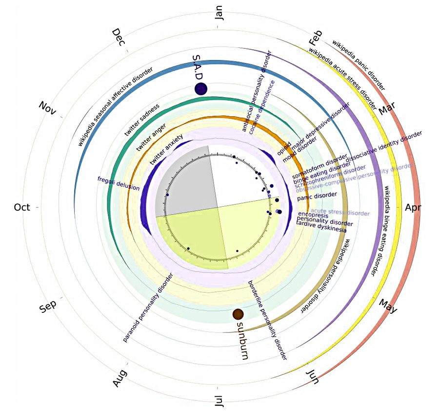
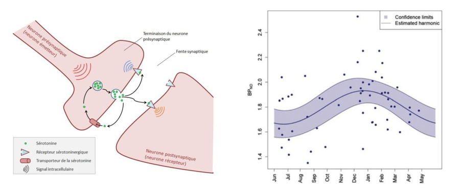

For most of us, despite the political frustrations that afflict some, summer is synonymous with good mood. This trend directly affects web platforms like Twitter, where positively connoted words become more frequent (Golder & Maci, 2011) while negatively connoted words decrease. The analysis of mood changes on the web (“sentiment analysis” in English) suggests that even our anxieties ease as Wikipedia searches related to various illnesses drop during the summer period.
What happens in our brain that might explain why our vocabulary and moods warm up as our skins caramelize? To answer this question, we must delve into a scientific field as vast as it is fascinating: chronobiology, which, as its etymology indicates, studies how organisms adapt to the temporal cycles of Mother Nature.

While the structure of the human brain is remarkably stable compared to that of smaller mammals (like the squirrel, whose brain shrinks by 10 to 25% in winter!), most of our body systems still adapt, to varying degrees, to the differences in light, humidity, and temperature that characterize each season.
But in terms of the “seasonality of emotions,” it is primarily the famous serotonin that we should look at. Involved in mood regulation, learning, appetite, and impulsivity, a series of studies demonstrates the existence of a “circannual” rhythm in this complex neuromodulator which is also one of the most important therapeutic targets for contemporary psychiatry.
Serotonin and Sunshine
Thus, the membrane transporter of serotonin, which helps clear the molecule after it has been released, decreases in concentration in summer and increases in winter (Praschak-Rieder et al., 2008; Kalbitzer et al., 2010). This annual variation is especially relevant as it appears absent in those who suffer from seasonal depression (seasonal affective disorder in English; McMahon et al., 2016). It is striking to note that classical antidepressants mimic the effect of the sun, as they also act by reducing the effectiveness of the serotonin transporter.
Two other aspects of the system also fluctuate throughout the year: the activity of the serotonergic neurons themselves increases with day length (Green et al., 2015) as does the density of certain receptors that bridge the “serotonin signal” and our behavior (the 5HT1A, for purists). Not to mention the cycles observed in the synthesis and degradation pathways of the molecule (Maes et al., 1995; Lambert et al., 2002; Luykx et al., 2013)… More signal at the base, less evacuation, and more receptors to receive it, all point in the same direction, making it quite natural to think that the serotonergic system as a whole significantly contributes to the fluctuation of our moods, and perhaps even some of our cognitive abilities (Keller et al., 2005; Meyer et al., 2016)!

Should we then soak up the sun in summer to charge up on good mood for the entire year? Is the phenomenon related to excessive sunbathing or the intensive use of tanning beds observed in some? It’s hard to say, especially since we don’t yet know if light has a direct impact or if the observed effects are due to another factor, which could be related to dietary changes or increased physical activity in summer.
It would therefore be reductive and even rash to hope to explain everything by serotonin, especially since other related chemical signals (like dopamine) also vary with the seasons. Regarding exposure to solar or artificial UV, a recent study conducted on mice suggests that it is actually endorphins that explain the development of true addictive behaviors (Fell et al., 2014). The idea is quite simple: prolonged exposure to UV causes a series of micro-traumas to our skin, which reacts by releasing these natural painkillers known as endorphins. In turn, these endorphins induce a feeling of relaxation and well-being similar to what joggers feel after a long run. And like athletes, a small proportion of individuals sensitive to this mechanism would develop a form of UV addiction that is increasingly concerning in the United States.
A Summer Picture Not So Rosy
Furthermore, as often in science, what seems obvious at first glance turns out to be more complex than it appears. For example, contrary to a deeply rooted popular belief, it is not during winter that the deepest psychological distresses manifest. The vast majority of available data indicates that suicide rates actually peak at the end of spring and early summer.
Conducted in the United States and Mexico, a study published on July 28 in the journal Nature Climate Change even shows a clear correlation between suicide rates and temperature variations from one year to the next. In other words, for a given month, suicide rates increase when temperatures are above usual values. And the effect sizes are so impressive that researchers estimate that global warming could have an impact similar to that of an economic crisis by 2050: for each additional degree, the suicide rate increases by 0.7% in the US and 2.1% in Mexico. To better understand the link between these two variables, researchers then analyzed 600 million tweets posted in these two regions. Unexpectedly but consistently with epidemiological observations, this second analysis reveals a positive correlation between monthly temperature and the number of “depressive connotation tweets.”

So, while summer brings its share of joys (and serotonin?) to most of us, it also represents a difficult period for vulnerable and fragile people. If the authors of the American study support the idea that the increase in suicide rates rests on a biological mechanism, they do not specify which one. In any case, it is known that summer can exacerbate social isolation, especially among those who do not have the chance to go on vacation and among the elderly (about 40% of the population in France).
Hence the usefulness of postcards!